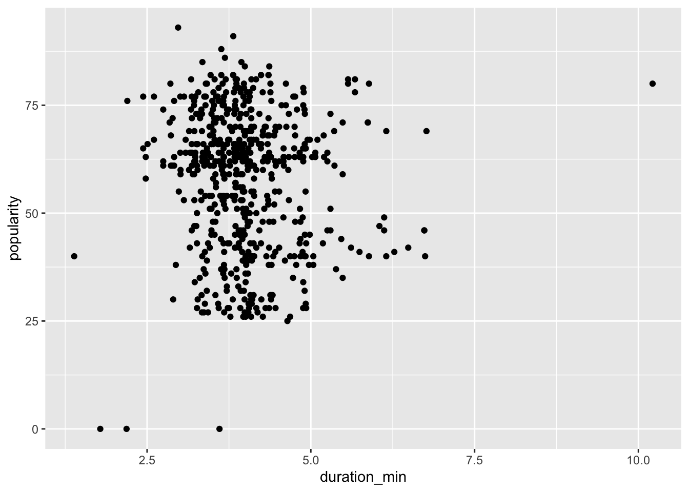
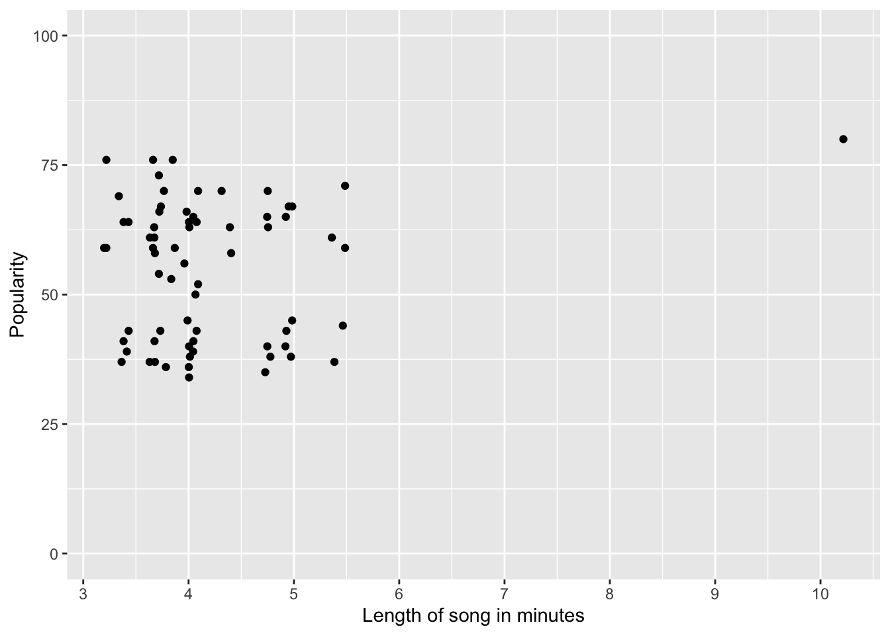

By Ella Barnes and Karina Kumar - Data Fellows of the Media Innovation Group at University of Texas at Austin.
Goals of this session
Import multiple files at once
Create your own function
Generate parameterized reports quickly
Why dRy? Data analysis often requires repetitive processes. These tools can help you maximize efficiency and stop repeating the same code over and over again.
The data
We will be working with two datasets: one about Taylor Swift songs and one about event-correlated power outages across the United States.
Since this lesson is not about cleaning or analysis, we have already done those things for you. But we will be importing the data as if it was in multiple files (which wouldn’t be the case after cleaning usually).
How this lesson works
For each part of the lesson, we will provide an example using the Taylor Swift dataset. Then we will give you an opportunity to try the concept on your own (OYO) using the power outages dataset. Most code chunks are numbered and correlate to number markdown lists afterwards. You can also view this lesson as a Quarto site if you want to come back at a later date to review what we do today.
Importing multiple files at once
First, we are going to look at how to import multiple files at once using the map() function. The Taylor Swift song data is divided into one csv for each album, and we want to bring it all into one object.
Set up
Importing our needed libraries. We use tidyverse for almost everything.
This sets the chunk label. Using setup specifically will run this code chunk first every time you render or run the page.
2
#| message: false hides the output messages that usually appear when you import libraries. We will show it again later.
3
Sometimes you do something that creates a warning in R, but you don’t always care. #| warning: false hides those warnings. We will talk about this more later too.
── Attaching core tidyverse packages ──────────────────────── tidyverse 2.0.0 ──
✔ dplyr 1.1.2 ✔ readr 2.1.4
✔ forcats 1.0.0 ✔ stringr 1.5.0
✔ ggplot2 3.4.3 ✔ tibble 3.2.1
✔ lubridate 1.9.2 ✔ tidyr 1.3.0
✔ purrr 1.0.2
── Conflicts ────────────────────────────────────────── tidyverse_conflicts() ──
✖ dplyr::filter() masks stats::filter()
✖ dplyr::lag() masks stats::lag()
ℹ Use the conflicted package (<http://conflicted.r-lib.org/>) to force all conflicts to become errors
library(janitor)
Attaching package: 'janitor'
The following objects are masked from 'package:stats':
chisq.test, fisher.test
Creating a list of file names
1taylor_files_list <-list.files(2"data-processed-taylor",3pattern =".csv",4full.names =TRUE# Try changing full.names to FALSE and see what happens to the output )taylor_files_list
1
list.files() creates a character vector of the names of files
2
The first argument is the path to find the files. In this case, we want to go into the directory (folder) called data-proccessed-taylor.
3
pattern is an optional argument that takes a regular expression to define which specific files you want. In this case we want all files that contain .csv.
4
full.names = TRUE gets the full path name rather than just the files name. Let’s change this and see what happens…
[1] "data-processed-taylor/1989 (Deluxe).csv"
[2] "data-processed-taylor/1989 (Taylor's Version) [Deluxe].csv"
[3] "data-processed-taylor/1989 (Taylor's Version).csv"
[4] "data-processed-taylor/1989.csv"
[5] "data-processed-taylor/evermore (deluxe version).csv"
[6] "data-processed-taylor/evermore.csv"
[7] "data-processed-taylor/Fearless (International Version).csv"
[8] "data-processed-taylor/Fearless (Platinum Edition).csv"
[9] "data-processed-taylor/Fearless (Taylor's Version).csv"
[10] "data-processed-taylor/folklore (deluxe version).csv"
[11] "data-processed-taylor/folklore- the long pond studio sessions (from the Disney+ special) [deluxe edition].csv"
[12] "data-processed-taylor/folklore.csv"
[13] "data-processed-taylor/Live From Clear Channel Stripped 2008.csv"
[14] "data-processed-taylor/Lover.csv"
[15] "data-processed-taylor/Midnights (3am Edition).csv"
[16] "data-processed-taylor/Midnights (The Til Dawn Edition).csv"
[17] "data-processed-taylor/Midnights.csv"
[18] "data-processed-taylor/Red (Deluxe Edition).csv"
[19] "data-processed-taylor/Red (Taylor's Version).csv"
[20] "data-processed-taylor/Red.csv"
[21] "data-processed-taylor/reputation Stadium Tour Surprise Song Playlist.csv"
[22] "data-processed-taylor/reputation.csv"
[23] "data-processed-taylor/Speak Now (Deluxe Package).csv"
[24] "data-processed-taylor/Speak Now (Taylor's Version).csv"
[25] "data-processed-taylor/Speak Now World Tour Live.csv"
[26] "data-processed-taylor/Speak Now.csv"
[27] "data-processed-taylor/Taylor Swift (Deluxe Edition).csv"
[28] "data-processed-taylor/THE TORTURED POETS DEPARTMENT- THE ANTHOLOGY.csv"
[29] "data-processed-taylor/THE TORTURED POETS DEPARTMENT.csv"
Reading in and combining the files
taylor_songs <- taylor_files_list |>#set_names(basename) |> 1map(2 read_csv,3col_types =cols(album =col_character())4) |>list_rbind() |>5clean_names()taylor_songs |>head(15)6# comment out the above line and the comma to see what happens b.7# uncomment set_names(basename) and add names_to = "source" inside list_rbind()
1
First we create a new object called talyor_songs which is where all our data will end up. Then we take our list of files names taylor_files_list and put it in the map() function. map() applies a method (in this case read_csv()) to every item in a list and returns a list as a result.
2
Our first argument is the function we want to apply which is read_csv() which returns a dataframe of the csv.
3
After the comma is col_types = which is an argument in read_csv(). This argument can set any or all of the column types as you import the data.
4
Once we use map to create a list of our newly created object from read_csv, we want to combine them all into one single object which already called taylor_songs, so we use list_rbind().
5
And then just to make everything look nice and uniform we use clean_names() to change the column names.
6
What happens when you comment out the col_types = line? Taylor’s album 1989 shows up as a number while the other album names show up as strings so get an error and can’t join the columns when we use list_rbind().
7
Let’s add set_names(basename) by uncommenting it and add names_to = "source" inside list_rbind(). Look at the output. It creates a column that shows which file each row came from. This can be really helpful when you maybe don’t have a column that has the date or year, but the file name does contain it. You can then extract it from that column.
OYO: Importing multiple files at once - Power Outages
Now, try this on your own with the power outage data.
Instructions: The files you want to import are all in a folder called data-processed-power. We have already given you the object names to put your code in to help with consistency and preventing repetition across files. Uncomment each of the lines and input code to read in the csv’s.
#power_files_list <-
#power_outages <- #power_outages |> glimpse()
Creating your own function
We want to create a function that creates a graph we can change over and over again.
First, let’s take a look at the Taylor Swift song data…
There are a lot of columns that describe different aspects of the music, but two that are obvious and stand our are popularity and song length. Do Taylor’s songs have any sort of correlation in popularity to length of the song? Let’s graph it to find out. The data creator has told us that popularity is on a scale of 1-100.
ggplot(taylor_songs, aes( x = duration_min,y = popularity)) +geom_point()

For our Taylor Swift fans, can you tell which song is all the way on the right?
What if we want to add labels and scale the axes differently? And what if we wanted to make the same graph for multiple albums? That would require a lot of recoding things we’ve already typed out before (or a lot of copy and pasting). Rather than rewriting this the same methods over and over again, we can make a function that does it for us.
We are going to call our function graphing_taylor.
1graphing_taylor <-function(song_data) {ggplot(song_data, aes(x= duration_min, y = popularity)) +geom_point() +labs(x ="Length of song in minutes", y ="Popularity") +scale_x_continuous(n.breaks =10) +scale_y_continuous(limits =c(0,100))}
1
Here we use the function method with one argument: song_data and then we define the function using the curly braces {}. This is extremely similar to JavaScript.
Now that we’ve built our function we can apply it to whatever album(s) we want. So let’s look at all the versions of the Red album first.
red <- taylor_songs |>filter(album |>str_detect("Red"))red
# A tibble: 68 × 16
name album release_date track_number uri acousticness danceability energy
<chr> <chr> <date> <dbl> <chr> <dbl> <dbl> <dbl>
1 State… Red … 2012-10-22 1 spot… 0.000197 0.588 0.825
2 Red Red … 2012-10-22 2 spot… 0.0773 0.602 0.896
3 Treac… Red … 2012-10-22 3 spot… 0.101 0.704 0.621
4 I Kne… Red … 2012-10-22 4 spot… 0.00454 0.622 0.469
5 All T… Red … 2012-10-22 5 spot… 0.0382 0.602 0.609
6 22 Red … 2012-10-22 6 spot… 0.00215 0.661 0.729
7 I Alm… Red … 2012-10-22 7 spot… 0.0173 0.567 0.481
8 We Ar… Red … 2012-10-22 8 spot… 0.00957 0.628 0.676
9 Stay … Red … 2012-10-22 9 spot… 0.307 0.729 0.748
10 The L… Red … 2012-10-22 10 spot… 0.035 0.505 0.443
# ℹ 58 more rows
# ℹ 8 more variables: instrumentalness <dbl>, liveness <dbl>, loudness <dbl>,
# speechiness <dbl>, tempo <dbl>, valence <dbl>, popularity <dbl>,
# duration_min <dbl>
Now we can apply our graphing function to the red object.
graphing_taylor(red)

And again we see our “All Too Well (10 minute version)” as a big outlier.
Now try it on your own.
OYO: Creating your own function
Let’s look at the power outage data.
#power_outages |> head(50)
Now make your own function that creates a bar chart for any state comparing BLANK AND BLANK